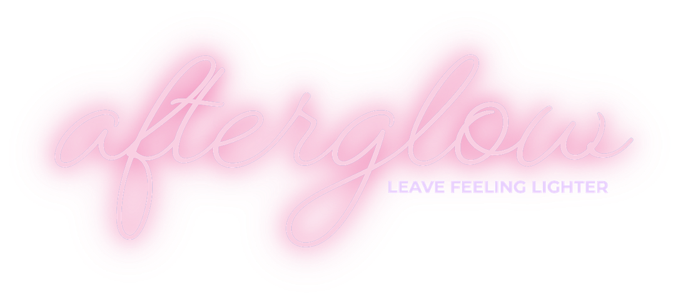

Dance with joy • No judgement • Wear what you want

First Thursday of the month, 8.30–9.30pm
The dance studio, The Grange School, Hartford
About
An hour that is just for you
Afterglow is a monthly hour of dancing in the dark for women. Low lights, loud feel-good music and nobody watching.
It isn't a class and there are no routines to learn. You turn up, the music goes on, and you move however you like. Come straight from work, come after a hard day, come on your own or bring a friend. Wear whatever you feel good in.
Afterglow was started by Cath Wilkinson, a community nurse from Northwich, who wanted somewhere affordable and welcoming where women of all ages could switch off from everything else for an hour. There is no bar, just water, and a kindness wall where you can leave a few good words for someone else.
Our mission is simple: you leave feeling lighter than when you arrived.
- Women onlyA relaxed room with no one to impress.
- No alcoholJust water, music and movement.
- No judgementDance how you want. Nobody is watching.
- One hour8.30 to 9.30pm, then home glowing.
Buy tickets
Join us on the dance floor
First Thursday of every month, 8.30–9.30pm.
Tickets are under £10 and are sold through Eventbrite.
Spaces are limited, so please book ahead. If this month has sold out or finished, the next date will be listed on our Eventbrite page.
How to get there
Find us
The Grange School
Bradburns Lane, Hartford
Northwich, Cheshire CW8 1LU
- By carParking is available on the school site. Follow the signs for visitor parking when you arrive.
- By trainGreenbank and Hartford stations are both within walking distance.
- When to arriveDoors open a little before 8.30pm so we can start on time.
- What to bringComfy shoes and a water bottle. That's it.
Playlists
Afterglow at home
Keep the feeling going in the kitchen, the car or the shower.
We'll share the playlist from each night here.